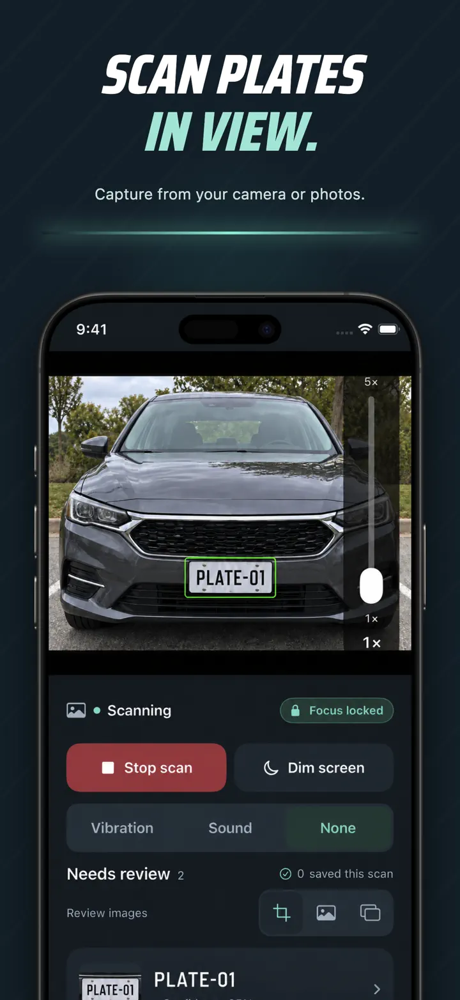

關於此 App
開啟相機即時掃描，或從照片圖庫選取照片。你可以檢查不確定的辨識結果、修正車牌號碼，也能調整自動儲存和重複拍攝設定。
保留車牌裁切圖與完整照片，並儲存拍攝時間和可用的位置資訊。也可以回顧同一車牌的多次拍攝紀錄。
搜尋已儲存的車牌，依日期或在地圖上瀏覽拍攝紀錄，也可以將車牌加入收藏，方便快速找到。
螢幕快照
螢幕快照顯示的是 App 的英文介面。




隱私與資料處理
「車牌掃描」會記錄你拍攝的內容。App 不會辨識車主身分，也不提供車輛識別號碼（VIN）、車籍資料或車輛歷史報告。
核心車牌辨識在你的裝置上執行。選用的雲端複核功能會在支援的裝置上使用 Apple Private Cloud Compute，並需要網路連線。功能是否可用取決於作業系統、裝置和服務限制。
辨識結果可能有誤，請在採用前先核對。車牌格式和拍攝條件都會影響結果。請勿在開車時使用 App，並尊重他人的隱私。
車牌掃描
用相機或照片辨識車牌。核對車牌文字、儲存詳細資訊，再透過搜尋、地圖和收藏回顧過去的紀錄。
在 App Store 查看